Opciones
Acquire control
Permite tomar el control de la entrada para poder tomar acciones sobre ella sin que otro usuario pueda modificarla mientras se encuentre utilizando. Esta opción es importante mencionar y resaltar que es útil ya que permitirá la manipulación de los elementos registrados, sin esta acción no se tendrán habilitadas las funciones.
Right Click > Acquire control
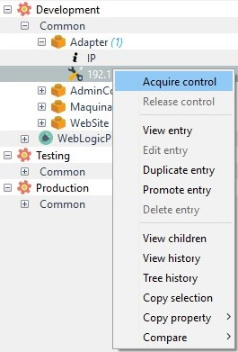
Una vez que se adquiere el control, se habilitan las acciones sobre las características del elemento.
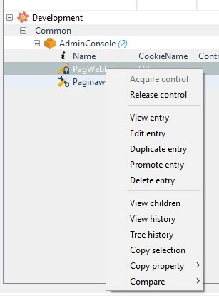
Release control
Permite ceder el control adquirido de la entrada para que otros usuarios puedan hacer uso de ella.
Right Click > Release control
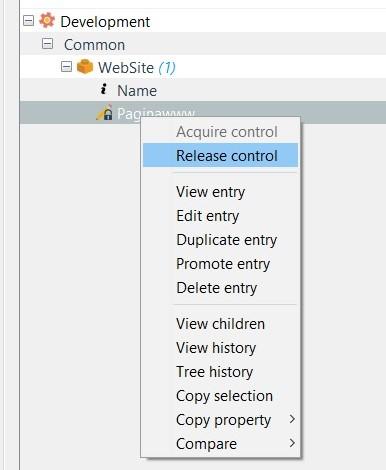
Edit entry
Esta opción permite visualizar y editar los valores de una entrada de configuración.
Nota: Se requiere adquirir el control de la entrada previo a editar o eliminarla.
Right Click > Edit Entry
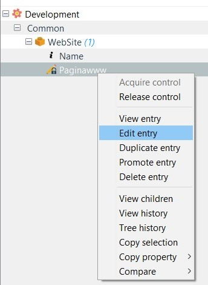
Los valores actuales de la entrada de configuración son mostrados, además es posible asignar nuevos valores y/o definir categorías oprimiendo el botón “Show Category”.
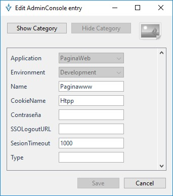
Donde se permite seleccionar la categoría en cada propiedad. Esta opción es útil cuando se desea identificar una propiedad de alta prioridad de manera visual.
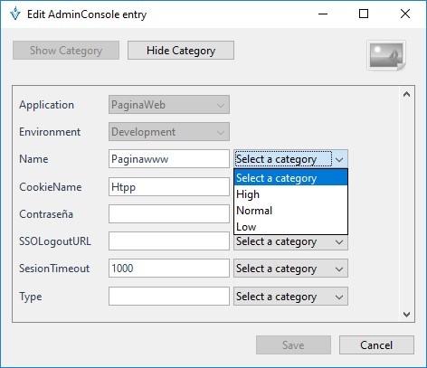
Duplicate entry
Esta opción permite duplicar una entrada de configuración en un aplicativo alterno o bien realizar una copia local.
Right Click > Duplicate Entry
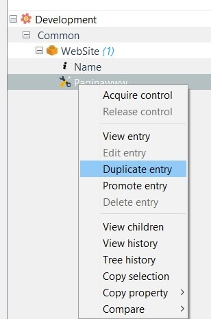
La siguiente pantalla muestra la entrada duplicada, en la cual se puede seleccionar en cual aplicación estará asociada la nueva entrada de configuración. Sin embargo el ambiente ya se encuentra definido de acuerdo con la configuración inicial del elemento original del que se duplico.
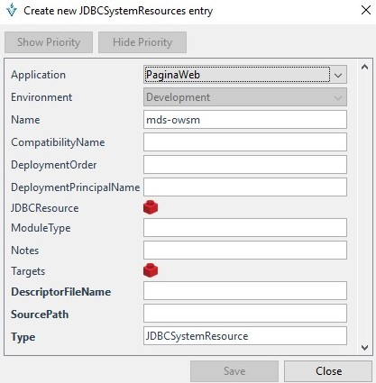
Nota: Para duplicar la “entrada de configuración” en la misma aplicación solo es necesario indicar los nuevos valores de cada una de las propiedades y guardar con el botón “Save”
Promote entry
Esta opción permite promover una entrada de configuración hacia un ambiente subsecuente. Esta opción es útil cuando una metodología de integración continua es utilizada.
Nota: Esta opción es muy útil cuando se requiere la propagación de configuraciones entre ambientes.
Right Click > Promote Entry
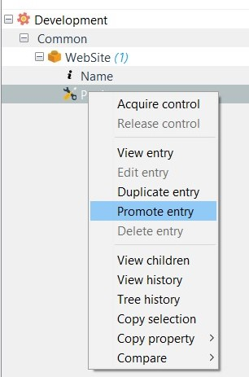
Esta opción permite elegir el ambiente al cual estará asociada la entrada de configuración a promover.
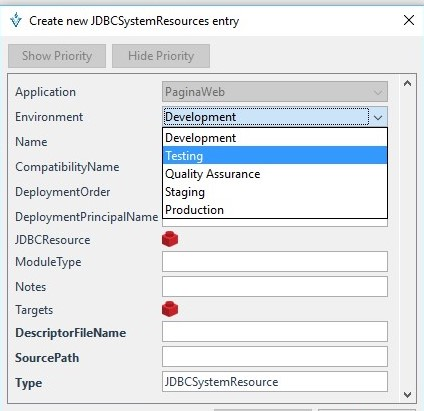
Delete entry
Esta opción permite eliminar una entrada de configuración.
Nota: Este proceso requiere confirmación por parte del usuario.
Se requiere adquirir el control de la entrada previo a editar o eliminar la entrada.
Right Click > Delete entry
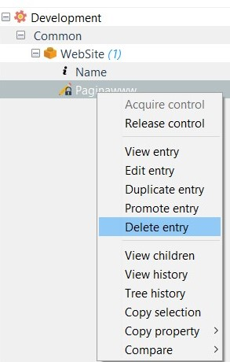
Antes de eliminar el elemento seleccionado, valida si está seguro de eliminarlo
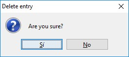
Al presionar el botón “Si” la entrada de configuración es eliminada.
Al presionar el botón “No” el proceso de eliminación, no se realiza.
View children
La siguiente pantalla muestra las diferentes entradas de configuración anidadas y asociadas a la entrada de configuración principal.
Right Click > View Children
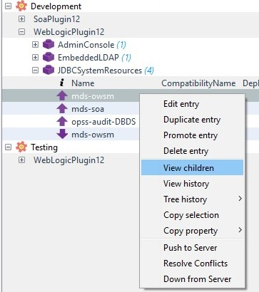
Esta pantalla permite agregar, modificar, o eliminar “entradas” de configuración del tipo componente anidado.
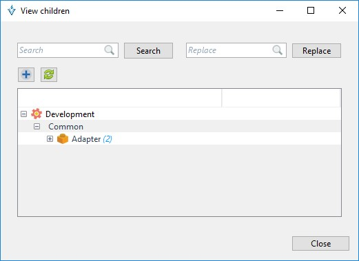
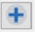 Este botón permite agregar una entrada de configuración del tipo seleccionado.
Nota: para poder hacer uso de la opción “View Children, se debe tener una asociación hacia otro componente por medio de una configuración de tipo “Bean”
View history
La siguiente opción muestra el historial de cambios realizados sobre los valores de una “entrada de configuración” específica.
Right Click > View History
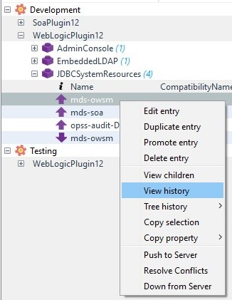
La siguiente pantalla muestra los cambios de valores sobre las entradas de configuración mediante una visualización basada en colores, siendo el color verde el registro original y el color azul los registros cambiantes.
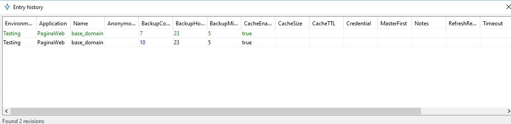
Tree history
En la siguiente opción se muestra el historial de cambios realizados sobre una “entrada de configuración” específica basada en las revisiones existentes.
Nota: Esta opción es útil cuando se desea identificar una configuración errónea y regresar a una configuración estable.
Right click > Tree history
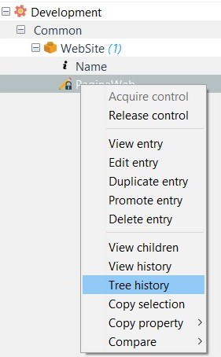
Se muestran las revisiones de la entrada de configuración, una revisión se genera cada que se modifica la entrada de con
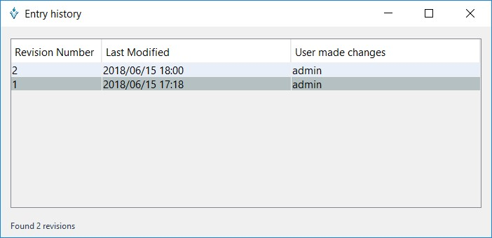
Doble click sobre el registro de la revisión que se desea saber la información que cambió.
La siguiente pantalla muestra los cambios de valores de las “entradas de configuración” mediante una visualización basada en colores:
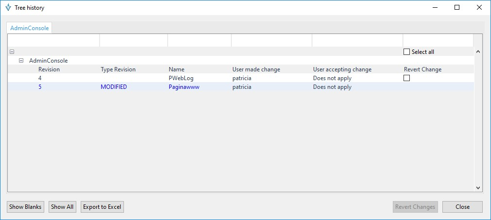
Al final de la ventana se encuentran acciones a realizar:
Show Blanks: Esta opción permite mostrar las entradas con propiedades en blanco.
Show all: Esta opción permite mostrar todas las entradas.
Export to excel: Esta opción permite exportar a Excel para tener un reporte de cambios.
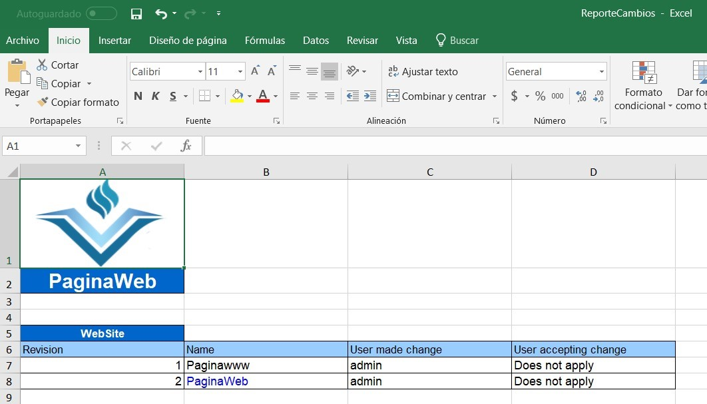
Revert Changes: Esta opción permite sobrescribir los valores actuales de una entrada de configuración con los valores de la revisión seleccionada. La que se encuentre activa en “Revert Change”
Copy Selection
Esta pantalla permite copiar al portapapeles las entradas de configuración seleccionadas, será necesario crear una selección de la “entrada” con el mouse o con las teclas [Shift + Dirección].
Right Click > Copy selection
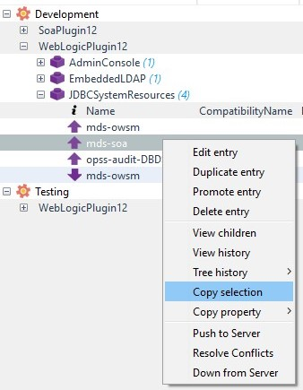
Nota: Esta opción es útil cuando se requiere compartir información con usuarios externos a VESTA.
Copy Property
Esta pantalla permite copiar al portapapeles el valor de una entrada de configuración en específico.
Right Click > Copy Property > Name
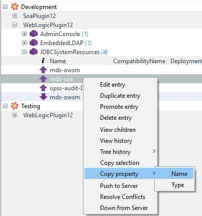
Nota: Esta opción es útil cuando se requiere copiar datos de URL’s o credenciales de acceso.
Compare
Esta opción permite comparar entradas de configuración del mismo tipo.
Right Click > Compare> Other proerty values
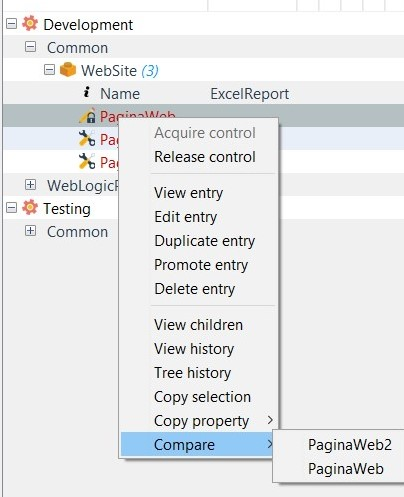
Al seleccionar la comparación, muestra el resultado obtenido

Al final de la ventana se encuentran acciones a realizar:
Show Blanks: Esta opción permite mostrar las entradas con propiedades en blanco.
Show all: Esta opción permite mostrar todas las entradas.
Export to excel: Esta opción permite exportar a Excel para tener un reporte de cambios.
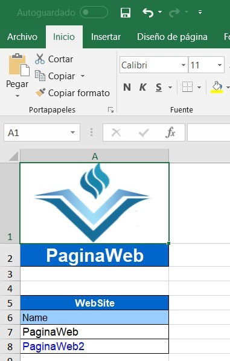